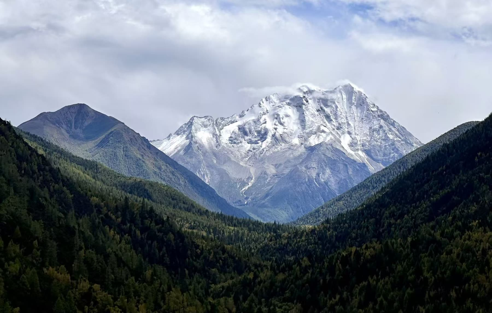
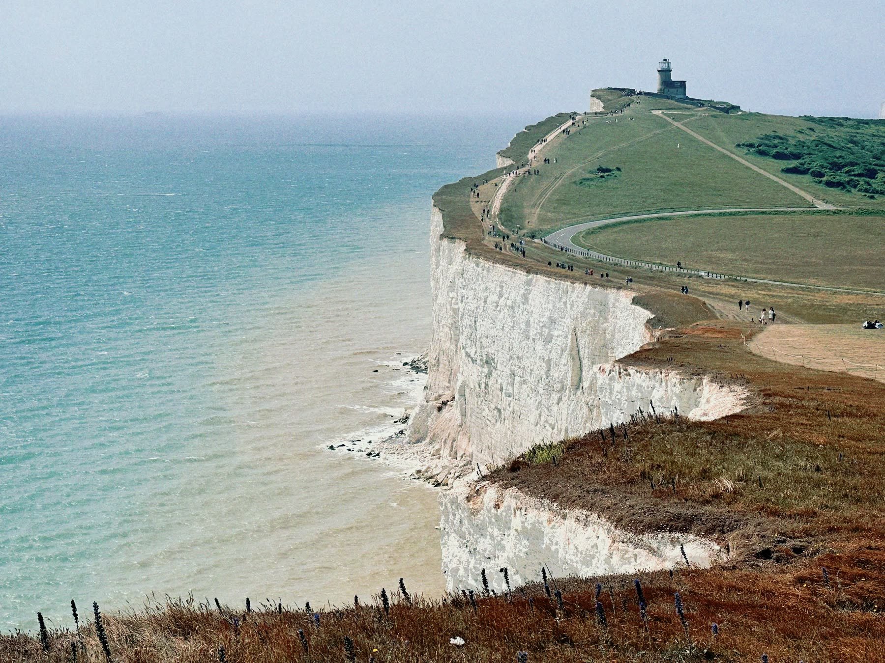
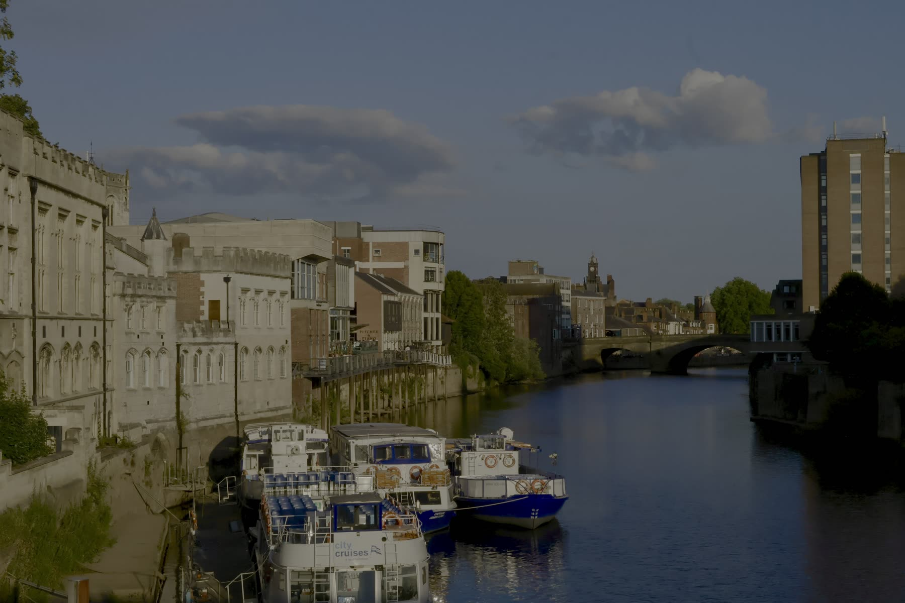
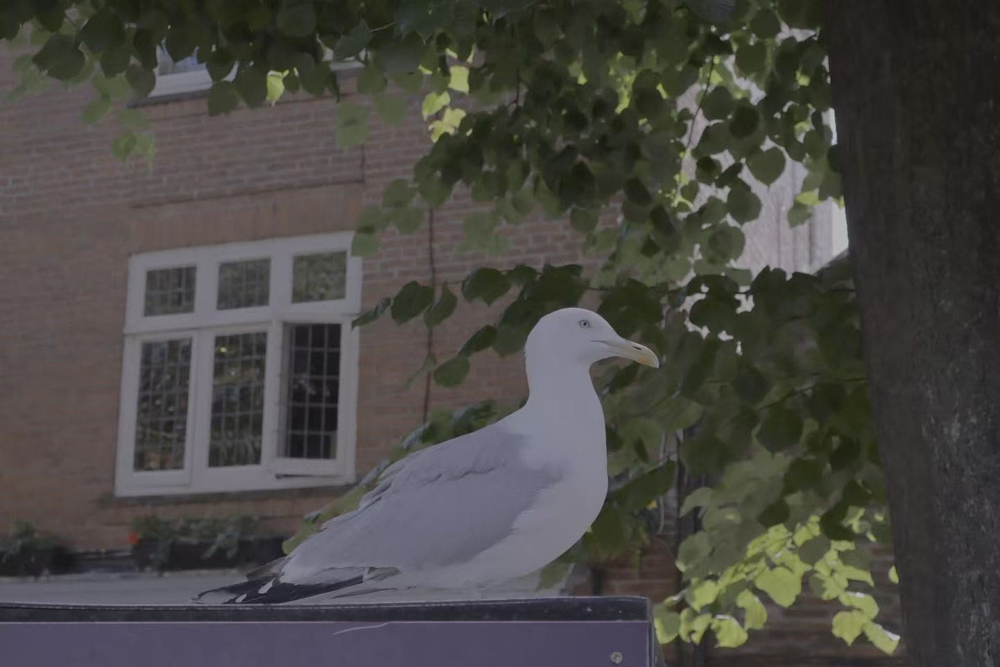

Photography
Mountains, coasts and cities I have walked through. Shot on a phone, mostly at the wrong time of day, which is when the light is interesting.




Mountains, coasts and cities I have walked through. Shot on a phone, mostly at the wrong time of day, which is when the light is interesting.



